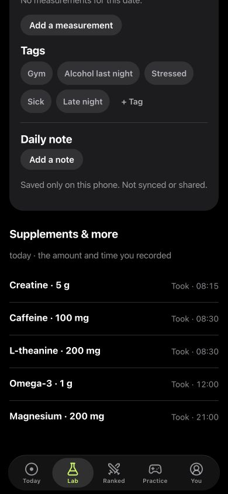

Meet your brain today.
A short daily check-in combines timed exercises. Explore 30 cognitive games in Practice, or play online Ranked duels on matched challenges.
Nootropics · Peptides · Supplements
A personal tracker for nootropics, peptides and supplements, with 30 cognitive games for iPhone. Keep what you take alongside reaction time, memory and attention results, then explore your own patterns.
Free to start · Core play works offline · No account needed for local play


A small daily ritual
A short daily check-in combines timed exercises. Explore 30 cognitive games in Practice, or play online Ranked duels on matched challenges.
Log sleep, energy and mood. Add your own measurements, tags and daily notes to a private Journal.
Follow saved results over time. Set up a personal experiment and compare the days you planned, with the context kept alongside them.
Made for the curious
Does a different routine line up with different game results? LabRats helps you record the question and look at your own observations.
Understand the method →A faster run can reflect practice, sleep, timing, distraction or chance. A pattern does not prove a cause. LabRats describes game performance; it does not diagnose a condition or establish that a substance or routine works.
Core play and the Journal work on your phone. An optional account adds account sync and online features. Separate settings control statistics contribution.
Questions before you start
Games cover reaction time, memory, attention, reasoning, spatial tasks and multitasking. The app records results and offers personal trends based on the play you save.
LabRats makes no promise to increase intelligence or improve performance outside its games. You may get better at a task through practice. The useful record is how your own game results change over time.
Core play, the daily check-in, Journal and personal experiments are available without Premium. Premium adds unlimited history, deeper analyses, Full Assessment, shared Labs and an ad-free experience. Available prices are shown in the app before purchase.
Yes. Core local play works offline. An account is required for online features such as Ranked and account sync. See the privacy policy for exactly what leaves your phone.
Explore your question
Start with a nootropic journal, a peptide tracking record or your daily supplement log. Connect it to the task measurements that matter to you.
Built around your own observations
LabRats: Brain Track & Train is being prepared for the App Store.